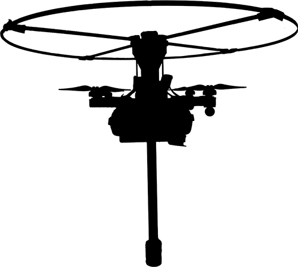

Introduction
This project explores the design and control of a robotic system. The goal was to improve locomotion and efficiency while handling variable environments.
Here we discuss the methodology, experimental setup, and challenges encountered during development.